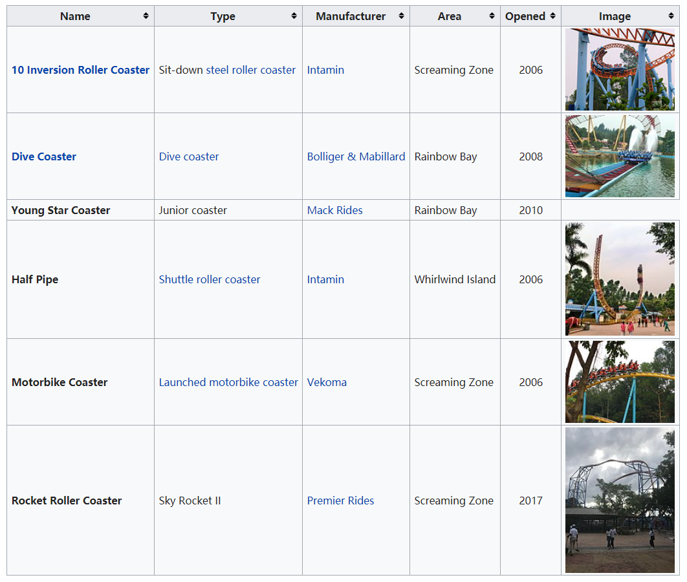

Introduction of Chimelong Paradise
Brief introduction
Chimelong Paradise (Chinese: 长隆欢乐世界) is a major amusement park in Panyu District,
Guangzhou, Guangdong, China. Opened on April 12, 2006, Chimelong Paradise is the largest
amusement park in China and boasts the 10 Inversion Roller Coaster, which prior to the opening
of The Smiler at Alton Towers, England shared the record for most inversions with Colossus
at Thorpe Park in Surrey, England. It is classified as a AAAAA scenic area
by the China National Tourism Administration.
Chimelong Paradise is part of Guangzhou Chimelong Tourist Resort which is operated
by the Chimelong Group, a Chinese tourism company that also operates numerous other attractions,
including Chimelong Ocean Kingdom, the Chimelong Safari Park and Chimelong International Circus.
Chimelong Group reported that construction of the park cost over 1 billion RMB. Stretching over
60 hectares, the park currently contains more than 60 attractions and has a daily capacity
of 50,000 visitors. In 2008 a new rollercoaster opened that is nearly 61 m tall (200 ft)
and reaches a maximum speed of 105 kilometres per hour (65 mph).The park is linked
by a bridge to Chimelong Water Park, some admission tickets include access to both parks.
On 29 July 2014, rare giant panda cub triplets, all three of which have thus far survived,
were born at the Chimelong Safari Park.
Rides and attractions

Transportation
Exit E of Hanxi Changlong Station on Line 3 is linked by a footbridge (3 minute walk) or free shuttle bus
Or